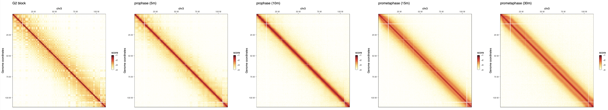
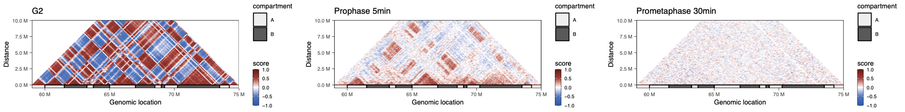
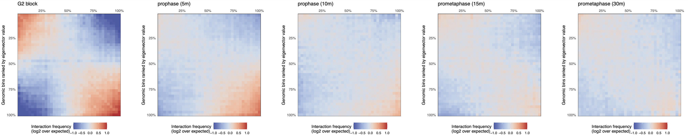
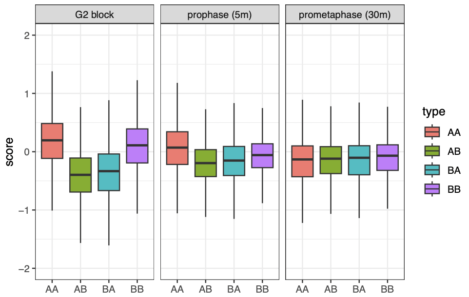

library(HiCExperiment)
library(fourDNData)
library(BiocParallel)
samples <- list(
'4DNES9LEZXN7' = 'G2 block',
'4DNESNWWIFZU' = 'prophase (5m)',
'4DNESGDXKM2I' = 'prophase (10m)',
'4DNESIR416OW' = 'prometaphase (15m)',
'4DNESS8PTK6F' = 'prometaphase (30m)'
)
bpparam <- MulticoreParam(workers = 5, progressbar = TRUE)
hics <- bplapply(names(samples), fourDNHiCExperiment, BPPARAM = bpparam)
## Fetching local Hi-C contact map from Bioc cache
## Fetching local compartments bigwig file from Bioc cache
## Fetching local insulation bigwig file from Bioc cache
## Fetching local borders bed file from Bioc cache
## Importing contacts in memory
## |===================================================| 100%
##
## ...Workflow 2: Chromosome compartment cohesion upon mitosis entry
Aims
This chapter illustrates how to:
- Annotate compartments for a list of HiC experiments
- Generate saddle plots for a list of HiC experiments
- Quantify changes in interactions between compartments between different timepoints
Datasets
We leverage five chicken datasets in this notebook, published in Gibcus et al. (2018). They are all available from the 4DN data portal using the fourDNData package.
-
4DNES9LEZXN7: chicken cell culture blocked in G2 -
4DNESNWWIFZU: chicken cell culture released from G2 block (5min) -
4DNESGDXKM2I: chicken cell culture released from G2 block (10min) -
4DNESIR416OW: chicken cell culture released from G2 block (15min) -
4DNESS8PTK6F: chicken cell culture released from G2 block (30min)
Importing data
The 4DN consortium provides access to the datasets published in Gibcus et al. (2018). in R, they can be obtained thanks to the fourDNData gateway package.
Beware
The first time the following chunk of code is executed, it will cache a large amount of data (mostly consisting of contact matrices stored in .mcool files).
names(hics) <- samples
hics[["G2 block"]]
## `HiCExperiment` object with 150,494,008 contacts over 4,109 regions
## -------
## fileName: "/home/rsg/.cache/R/fourDNData/25c33c9d826f_4DNFIT479GDR.mcool"
## focus: "whole genome"
## resolutions(13): 1000 2000 ... 5000000 10000000
## active resolution: 250000
## interactions: 7262748
## scores(2): count balanced
## topologicalFeatures: compartments(891) borders(3465)
## pairsFile: N/A
## metadata(3): 4DN_info eigens diamond_insulationPlotting whole chromosome matrices
We can visualize the five different Hi-C maps on the entire chromosome 3 with HiContacts by iterating over each of the HiCExperiment objects.

This highlights the progressive remodeling of chromatin into condensed chromosomes, starting as soon as 5’ after release from G2 phase.
Zooming on a chromosome section
Zooming on a chromosome section, we can plot the Hi-C autocorrelation matrix for each timepoint. These matrices are generally used to highlight the overall correlation of interaction profiles between different segments of a chromosome section (see Chapter 5 for more details).
## --- Format compartment positions of chr. 4 segment
.chr <- 'chr4'
.start <- 59000000L
.stop <- 75000000L
library(GenomicRanges)
coords <- GRanges(paste0(.chr, ':', .start, '-', .stop))
compts_df <- topologicalFeatures(hics[["G2 block"]], "compartments") |>
subsetByOverlaps(coords, type = 'within') |>
as.data.frame()
compts_gg <- geom_rect(
data = compts_df,
mapping = aes(xmin = start, xmax = end, ymin = -500000, ymax = 0, alpha = compartment),
col = 'black', inherit.aes = FALSE
)
## --- Subset contact matrices to chr. 4 segment and computing autocorrelation scores
g2 <- hics[["G2 block"]] |>
subsetByOverlaps(coords) |>
zoom(100000) |>
autocorrelate()
pro5 <- hics[["prophase (5m)"]] |>
subsetByOverlaps(coords) |>
zoom(100000) |>
autocorrelate()
pro30 <- hics[["prometaphase (30m)"]] |>
subsetByOverlaps(coords) |>
zoom(100000) |>
autocorrelate()
## --- Plot autocorrelation matrices
plot_grid(
plotMatrix(
g2,
use.scores = 'autocorrelated',
scale = 'linear',
limits = c(-1, 1),
cmap = bwrColors(),
maxDistance = 10000000,
caption = FALSE
) + ggtitle('G2') + compts_gg,
plotMatrix(
pro5,
use.scores = 'autocorrelated',
scale = 'linear',
limits = c(-1, 1),
cmap = bwrColors(),
maxDistance = 10000000,
caption = FALSE
) + ggtitle('Prophase 5min') + compts_gg,
plotMatrix(
pro30,
use.scores = 'autocorrelated',
scale = 'linear',
limits = c(-1, 1),
cmap = bwrColors(),
maxDistance = 10000000,
caption = FALSE
) + ggtitle('Prometaphase 30min') + compts_gg,
nrow = 1
)
These correlation matrices suggest that there are two different regimes of chromatin compartment remodeling in this chromosome section:
- Correlation scores between genomic bins within the compartment A remain positive 5’ after G2 release (albeit reduced compared to G2 block) and eventually become null 30’ after G2 release.
- Correlation scores between genomic bins within the compartment B are overall null as soon as 5’ after G2 release.
Generating saddle plots
Saddle plots are typically used to measure the observed vs. expected interaction scores within or between genomic loci belonging to A and B compartments. Here, they can be used to check whether the two regimes of chromatin compartment remodeling are observed genome-wide.
Non-overlapping genomic windows are grouped by nbins quantiles (typically between 10 and 50 bins) according to their A/B compartment eigenvector value, from lowest eigenvector values (i.e. strongest B compartments) to highest eigenvector values (i.e. strongest A compartments). The average observed vs. expected interaction scores are computed for pairwise eigenvector quantiles and plotted in a 2D heatmap.
pl <- imap(hics, ~ plotSaddle(.x, nbins = 38, BPPARAM = bpparam) + ggtitle(.y))
plot_grid(plotlist = pl, nrow = 1)
These plots confirm the previous observation made on chr. 4 and reveal that intra-B compartment interactions are generally lost 5’ after G2 release, while intra-A interactions take up to 15’ after G2 release to disappear.
Beware
The plotSaddle() function requires an eigenvector corresponding to A/B compartments. In this example, this eigenvector is recovered from the 4DN data portal. If not already available, this eigenvector can be computed from the contact matrix using the getCompartments() function.
Quantifying interactions within and between compartments
We can leverage the replicate-merged contact matrices to quantify the interaction frequencies within A or B compartments or between A and B comaprtments, at different timepoints.
We can use the A/B compartment annotations obtained at the G2 block timepoint and extract O/E (observed vs expected) scores for interactions within A or B compartments or between A and B compartments, at different timepoints.
## --- Extract the A/B compartments identified in G2 block
compts <- topologicalFeatures(hics[["G2 block"]], "compartments")
compts$ID <- paste0(compts$compartment, seq_along(compts))
## --- Iterate over timepoints to extract `detrended` (O/E) scores and
## compartment annotations
library(plyranges)
df <- imap(hics[c(1, 2, 5)], ~ {
ints <- cis(.x) |> ## Filter out trans interactions
detrend() |> ## Compute O/E scores
interactions() ## Recover interactions
ints$comp_first <- join_overlap_left(anchors(ints, "first"), compts)$ID
ints$comp_second <- join_overlap_left(anchors(ints, "second"), compts)$ID
tibble(
sample = .y,
bin1 = ints$comp_first,
bin2 = ints$comp_second,
dist = pairdist(ints),
OE = ints$detrended
) |>
filter(dist > 5e6) |>
mutate(type = case_when(
grepl('A', bin1) & grepl('A', bin2) ~ 'AA',
grepl('B', bin1) & grepl('B', bin2) ~ 'BB',
grepl('A', bin1) & grepl('B', bin2) ~ 'AB',
grepl('B', bin1) & grepl('A', bin2) ~ 'BA'
)) |>
filter(bin1 != bin2)
}) |> list_rbind() |> mutate(
sample = factor(sample, names(hics)[c(1, 2, 5)])
)We can now plot the changes in O/E scores for intra-A, intra-B, A-B or B-A interactions, splitting boxplots by timepoint.
ggplot(df, aes(x = type, y = OE, group = type, fill = type)) +
geom_boxplot(outlier.shape = NA) +
facet_grid(~sample) +
theme_bw() +
ylim(c(-2, 2))
This visualization suggests that interactions between genomic loci belonging to the B compartment are lost more rapidly than those between genomic loci belonging to the A compartment, when cells are released from G2 to enter mitosis.
References
Gibcus, J. H., Samejima, K., Goloborodko, A., Samejima, I., Naumova, N., Nuebler, J., Kanemaki, M. T., Xie, L., Paulson, J. R., Earnshaw, W. C., Mirny, L. A., & Dekker, J. (2018). A pathway for mitotic chromosome formation. Science, 359(6376). https://doi.org/10.1126/science.aao6135